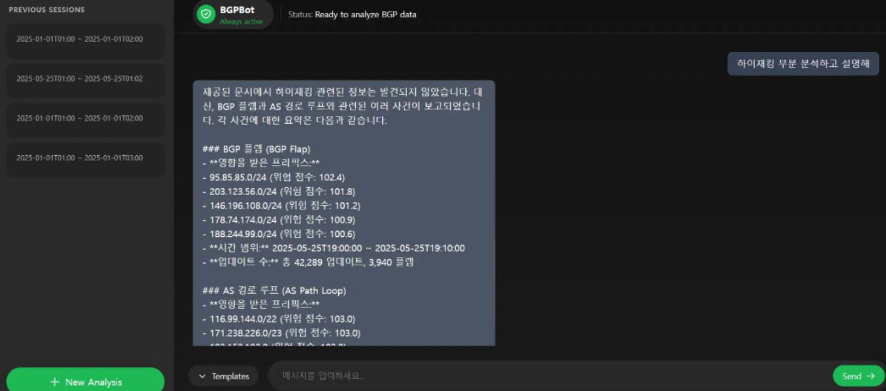

전문 로그를 읽는 부담
BGP는 네트워크 사이에서 경로 정보를 주고받는 프로토콜입니다. 로그에는 어떤 네트워크를 거쳐 목적지로 가는지가 기록되지만 라우팅 지식이 없으면 변화의 의미를 파악하기 어렵습니다.
사용자가 기간과 IP를 지정하면 해당 구간의 변화를 분석하고 자연어로 질문할 수 있는 서비스를 만들었습니다. 3인 팀에서 로그 분석과 챗봇 구조 설계를 맡았습니다.
분석 보고서를 먼저 만드는 구조
원시 로그를 그대로 검색 대상에 넣으면 답변의 근거가 여러 기록에 흩어질 수 있다고 판단했습니다. 먼저 분석 결과를 보고서로 정리하고 이후의 질문은 그 보고서를 근거로 답하도록 구성했습니다.
챗봇의 역할은 분석된 내용을 사용자가 탐색할 수 있도록 설명하는 것이었습니다. 로그를 분석하는 단계와 분석 결과에 관해 답하는 단계를 나눠 설계했습니다.
내가 맡은 분석과 설계
경로 변화와 이상 의심 정황을 분석했습니다
RIPE RIS 데이터를 바탕으로 AS Path 변화를 살폈습니다. AS Path는 경로에 포함된 네트워크의 순서로 이를 분석해 Prefix Hijack과 Route Leak이 의심되는 정황을 확인하는 흐름을 담당했습니다.
Prefix Hijack은 다른 네트워크의 주소 대역을 자신의 경로처럼 알리는 상황이고 Route Leak은 경로 정보가 의도하지 않은 범위로 전파되는 상황입니다. 분석 결과는 추가 확인이 필요한 의심 정황으로 다뤘습니다.
질문에 답하기 전에 근거를 정리했습니다
사용자의 질문마다 원시 로그에서 해석을 새로 시작하는 대신 지정한 범위를 먼저 분석하도록 했습니다. 분석 결과를 보고서로 만든 뒤 RAG에 연결해 사용자가 같은 결과를 두고 후속 질문을 할 수 있도록 챗봇 구조를 설계했습니다.
구현 결과
사용자가 분석 범위를 지정하고 생성된 보고서에 관해 자연어로 질문하는 챗봇을 개발했습니다. 라우팅 데이터를 직접 읽어야 했던 과정을 분석 보고서와 질의응답으로 이어지는 흐름으로 바꿨습니다.

새로운 데이터를 다루며 배운 점
낯선 데이터를 다룰 때는 모델을 연결하기 전에 각 필드와 변화가 무엇을 의미하는지 이해해야 했습니다. BGP에서는 경로를 분석하는 과정이 먼저였고 챗봇은 그 결과를 사용자가 활용할 수 있게 만드는 수단이었습니다.
분야가 달라져도 데이터를 해석하는 기준과 답변에 필요한 근거부터 정리하는 순서로 접근합니다. 이 프로젝트는 문서나 게임 데이터 외에 네트워크 로그를 분석해 AI 질의응답으로 연결해 본 경험입니다.